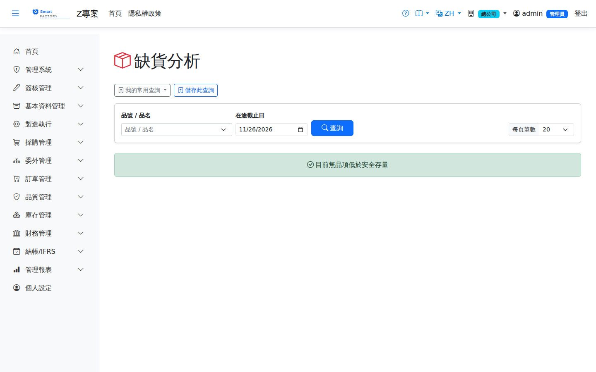

缺貨分析Stock Shortage
路由：/StockShortage | 低於安全庫存/需求缺口清單Route: /StockShortage | Items below safety stock or short of demand
列出目前可用量低於安全存量的品號，並把截止日前會到的採購在途與委外在途加進來，推算「在途補足後還缺多少」，供補貨決策。在途的算法與工單投產時的料況檢查共用同一套；工單剩餘產出、待驗量與尚未經 MRP 預留的需求都不計。Lists items whose current available quantity is below safety stock, then adds PO and outsource quantities due by the cutoff date to show how much is still short once in-transit arrives, for replenishment decisions. In-transit is calculated exactly as the material check at work order release does; remaining work order output, quarantine stock and demand not yet reserved by MRP are not counted.

缺料分析畫面截圖（示意，實際欄位/資料依權限與查詢條件而異）Shortage analysis screenshot (illustrative; actual fields and data vary by permission and query criteria)
查詢Search
1
查詢列輸入條件後點「查詢」；欄位標題可點擊排序，清單下方有分頁導航。Enter your criteria on the query bar and click "Search"; column headers can be clicked to sort, and the paging controls sit below the list.
欄位說明Field reference
查詢條件Query criteria
| 條件Condition | 說明Guide |
|---|---|
| 品號 / 品名Product | 關鍵字模糊比對；留空列出全部有缺口的料件Partial keyword match; leave blank to list every item with a shortfall |
| 在途截止日In-transit until | 只計到貨日（委外為應交日）在此日以前的在途；留白＝今天起 30 天。與工單投產時用計畫開工日當截止日是同一個意思Only in-transit due on or before this date (expected delivery date for outsourcing) is counted; blank = 30 days from today. It plays the same role as the planned start date used as the cutoff at work order release |
報表欄位Report fields
| 欄位Field | 說明Guide |
|---|---|
| 品號 / 品名Product | 料件代碼與名稱Product code and name |
| 庫存單位Stock UOM | 庫存管理使用的計量單位Unit used for inventory management |
| 安全存量Safety Stock | 產品主檔設定的安全庫存水位Safety stock level set on the product master |
| 在手量（不含待驗）On Hand (excl. Quarantine) | 目前實際在庫數量，全倉合計但不含待驗倉（IQC 尚未放行不可動用）；客供倉照計Quantity on hand across all warehouses except quarantine (not usable until IQC releases it); customer-supplied warehouses are included |
| 預留量Reserved | 已被工單、備料或 MRP 預留但尚未發出的數量（與 MRP、投產同一份預留）Quantity reserved by work orders, staging or MRP but not yet issued (the same reservations MRP and release use) |
| 目前可用Available Now | 在手量 − 預留量，下限 0On hand − reserved, never below 0 |
| 目前缺口Shortage Now | 安全存量 − 目前可用；大於 0 的品號才會列出Safety stock − available now; only items above 0 are listed |
| 採購在途PO In Transit | 已核准、未結案採購單在截止日前到貨的未收量，扣除已被其他需求認領的部分Unreceived quantity on approved, open purchase orders due by the cutoff date, less what other demand has already claimed |
| 委外在途Outsource In Transit | 已確認委外採購單在截止日前應交的未收量，扣除已被其他需求認領的部分Unreceived quantity on confirmed outsource purchase orders due by the cutoff date, less what other demand has already claimed |
| 預計可用Projected Available | 目前可用＋採購在途＋委外在途Available now + PO in transit + outsource in transit |
| 預計缺口Projected Shortage | 安全存量 − 預計可用，下限 0；0（綠色）表示在途到齊就補足，大於 0 才是真的要補料。清單依此欄由大到小排序Safety stock − projected available, never below 0; 0 (green) means in-transit covers it, above 0 means you really need to replenish. The list is sorted by this column, largest first |